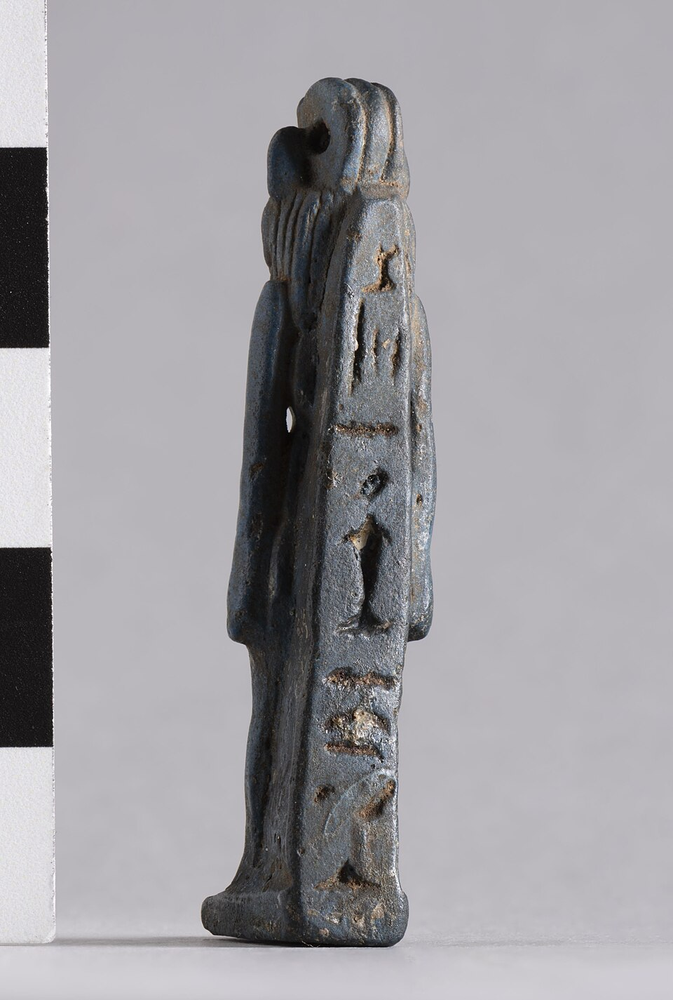

Бастет
«Та, от Баст» · госпожа Бубастиса · мягкое Око Ра · владычица систра

Происхождение и образ
Бастет (Bꜣstt) — «та, от Баст»: сама богиня производна от своего имени, а имя её, по распространённой этимологии, связано со словом «баст» — сосуд для благовонной мази; тогда она — «ароматная». В древнейших текстах Ветхого завета её имя дошло как Вуваст (книга Иеремии), а греки оставили его в названии города Бубастис — современной Телль-Басты в восточной дельте.
Ранняя Бастет — отнюдь не домашняя красавица: в Древнем царстве она львица, «Око Ра», свирепая защитница солнечного бога и царской власти (эпитет «та, что режет» — в «Текстах пирамид»). К Среднему и особенно Новому царству образ «домашнеет»: львиные черты остаются на границе гнева, но в основном перед нами женщина с головой кошки — воплощение чистоты, изящества и охранительного тепла. Это тот же сюжет, что Хатор↔Сехмет: одна сила, две настройки.
Иконография
Классический облик Бастет: женщина с головой кошки, в облегающем платье, часто с систером — металлическим трещоточным музыкальным инструментом её культа — и с эгидой — накидкой с уреем, знаком защитного божественного жара. Иногда держит сисстру и сосуд («баст») или сидит в позе кошки на корточках. Кошачьи бронзовые статуэтки Позднего времени — маленькие шедевры с инкрустацией — массово изготавливались для подношений: «Бастет, слушай молитву» — и такие статуэтки мумифицировали и хоронили в святилищах кошек.
Священные животные богини — кошки и (в архаике) львицы; в Бубастисе существовал кошачий некрополь, и именно сюда в массовом порядке свозили кошачьи мумии. Амулеты с кошачьей головой охраняли дома и детей.
Культ: Бубастис и самый шумный праздник Египта
Главный город культа — Бубастис в 18-м номе Нижнего Египта. Геродот (II, 59–60) оставил живое описание праздника Бастет: по рекам к городу сходятся корабли, набитые людьми — «множество мужчин и женщин», по дороге играя на флейтах, хлопая в ладоши и распевая песни; в самом святилище — неслыханное веселье, вино льётся рекой. По Геродоту, праздник в Бубастисе собран с большим стечением народа, чем любой другой в Египте, и радость на нём — большая, чем на всех прочих.
Содержание службы — не только карнавал: в храме служили «певчие богини», систр звенел, отгоняя злое; Бастет почиталась как защитница дома, женщин (особенно рожениц) и как истребительница злых духов и змей. При династии XXII (бубастисской, X–IX вв. до н. э.) Бастет стала фактически государственной богиней — её жрецы правили, а титул «кормилицы Бастет» носили цари.
Мягкое Око Ра
В мифе о «далекой богини» (цикл «Пожирания людей») Око Ра уходит из Египта в нубийские земли в облике свирепой львицы и сеет гибель, пока хитростью (красное пиво, принятое за кровь) не будет умиротворено и возвращено домой — уже любящей. Возвращение Ока — сюжет примирения и плодородия; его праздновали по всему Египту. В этой системе координат Бастет — та же сила в «домашнем» режиме: гнев, который выбрал ласку. Рядом с ней в триадах стоят её «львиные» сёстры — Сехмет и Тефнут, а в греко-римское время Бастет сближают с Артемидой, а иногда и с Исидой.